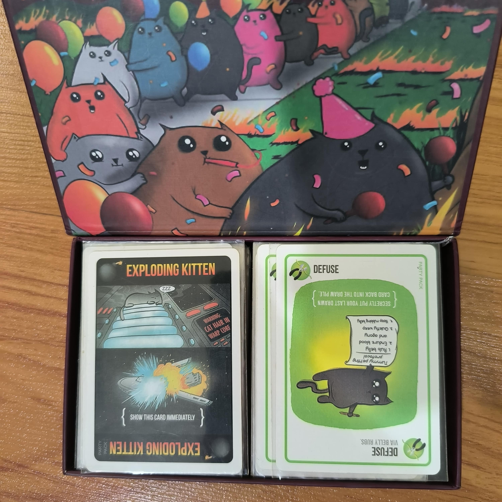

-

- |
- Boardgames

How to play : Exploding Kittens
การตั้งค่าเกม
- จำนวนผู้เล่น: 2-10 คน
- เตรียมส่วนประกอบ:
- การ์ด Action (ที่ใช้เพื่อการบลัฟและการเคลื่อนไหว)
- การ์ด "Exploding Kitten" (มีจำนวนที่กำหนดในกฎ)
- การ์ด Defuse (สำหรับป้องกันการ์ด Exploding Kitten)
- แจกการ์ด:
- แจกการ์ด Defuse ให้กับผู้เล่นแต่ละคน
- แจกการ์ด Action ให้กับผู้เล่น
- ใส่การ์ด Exploding Kitten ลงในกองการ์ดและสับให้เข้ากัน(มีจำนวนเท่ากับผู้เล่น -1 ใบ)
- ตั้งค่าเกม:
- วางกองการ์ดที่ผสมแล้วไว้ตรงกลาง
วิธีการเล่น
- การเล่นเทิร์น:
- ผู้เล่นจะสลับกันทำเทิร์น โดยสามารถเล่นการ์ด Action หรือดึงการ์ดจากกองการ์ด
- การดึงการ์ด:
- ผู้เล่นต้องดึงการ์ดจากกองการ์ดกลางในแต่ละเทิร์น
- หากดึงการ์ด Exploding Kitten จะต้องใช้การ์ด Defuse เพื่อป้องกันการแพ้
- การใช้การ์ด Defuse:
- หากผู้เล่นดึงการ์ด Exploding Kitten และมีการ์ด Defuse จะต้องใช้การ์ด Defuse เพื่อป้องกันการแพ้
- การ์ด Defuse จะช่วยให้ผู้รอดจาก Exploding Kitten จากนั้นใส่การ์ด Exploding Kitten กลับเข้าไปในกองการ์ดใหม่ จะสับใหม่หรือไม่สับก็ได้
- การใช้การ์ด Action:
- ผู้เล่นสามารถใช้การ์ด Action เช่น Attack, Skip, See the Future, หรือ Shuffle เพื่อเปลี่ยนแปลงสถานการณ์ในเกม
- การ์ด Action บางใบจะมีความสามารถ เมื่อใช้แล้วจะจบหนึ่งเทิร์น เช่น Skip หากโดน Attack จะถือว่าต้องเล่นสองเทิร์นหรือมากกว่า
- Action card : Attack เมื่อใช้จะถือว่าส่งต่อเทิร์นปัจจุบันของตัวเอง +1 ให้ผู้เล่นคนถัดไป (หากผู้เล่นอื่นใช้ Attack มาหาเรา เราต้องเล่นเทิร์นนี้ทั้งหมดสองเทิร์น หากเราใช้ Attack ต่อ จะส่งต่อเทิร์นปัจจุบัน +1 ให้ผู้เล่นคนถัดไป ในกรณีนี้คนถัดไปต้องเล่น 2+1 เทิร์น)
- การจบเกม:
- กมจะสิ้นสุดเมื่อมีผู้เล่นเหลือเพียงคนเดียวที่ยังไม่แพ้